Overview of the problem
We consider an open rectangular container of unit width containing a still viscous fluid of prescribed volume 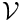 that meets the wall of the container at a contact angle 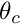. The external fluid is assumed to be inviscid and massless and acts only through an external pressure, , at the bounding (free) surface of the viscous fluid. In the absence of any body forces or external forcing, a static solution is obtained in which the velocity field is zero, the fluid pressure is a constant, 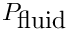, and free surface is of constant curvature (an arc of a circle in two-dimensions), set by the contact angle and the geometry of the domain. From simple geometry, the mean curvature of the interface in the present problem is 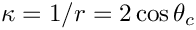, see the figure below. The pressure difference across the interface, 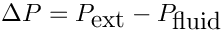, then follows from the dynamic boundary condition.
The governing equations are the Navier–Stokes equations together with the free surface boundary conditions at the upper surface, see another tutorial for further details. As in that tutorial, we also compute the deformation of the internal fluid mesh by using a pseudo-solid node-update strategy.
For simplicity, we assume symmetry of the domain about the vertical centreline of the container, which we choose to be the  -axis; hence, the initial computational domain is 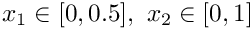. The fluid boundary conditions are no slip, 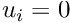, on the container boundaries at 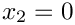 and 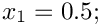 and a symmetry condition at
-axis; hence, the initial computational domain is 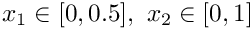. The fluid boundary conditions are no slip, 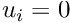, on the container boundaries at 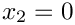 and 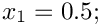 and a symmetry condition at  . Under the standard non-dimensionalisation the pressure difference over the interface is 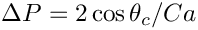, where
. Under the standard non-dimensionalisation the pressure difference over the interface is 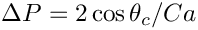, where  is the capillary number, also defined in the other tutorial. In the present (static) example, the capillary number is a simple multiplicative factor that sets the pressure scale.
is the capillary number, also defined in the other tutorial. In the present (static) example, the capillary number is a simple multiplicative factor that sets the pressure scale.
There remain the two additional constraints that must be enforced:
- The fluid volume must be .
- The contact angle where the fluid meets the container wall at 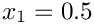 must be 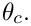
Enforcing the volume constraint
For capillary-static problems, the fluid velocity field is zero and the continuity equation is trivially satisfied. Thus, conservation of mass is not guaranteed without an additional constraint. Mathematically speaking, the system is underdetermined and the equation associated with a pressure degree of freedom (either a fluid pressure or the external pressure) can be replaced by the additional volume constraint, specified by the equation:
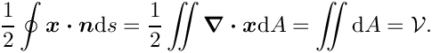
MATTHIAS, see also the droplet/bubble problems.
Perhaps the most natural implementation in the present problem is to fix a reference pressure value within the fluid and then to treat the external pressure as a degree of freedom with the volume constraint as the associated equation. Alternatively, the external pressure can be fixed at a reference pressure and an internal fluid pressure degree of freedom is then associated with the volume constraint. We shall demonstrate both methods in the driver code below.
Computation of the above equation associated with the volume constraint is performed by specialised LineVolumeConstraintBoundingElements that must be attached to all boundaries that enclose the fluid.
Enforcing the contact angle constraint
Here the `‘natural’' contact-angle boundary condition arises from the weak form of the dynamic boundary condition after integration using the surface divergence theorem. This leads to a term of the form
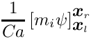
in the momentum equations associated with the boundaries of the free surface, where 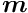 is a unit vector tangential to the free surface at those boundaries.
At the (left-hand) symmetry boundary, 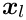, we neglect this additional term in the momentum equation associated with the tangential direction, which ensures that the interface is (weakly) normal to the symmetry boundary. At the (right-hand) container boundary, 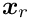, the contact angle could be enforced by adding a boundary term with prescribed . In general,
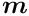
where 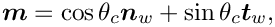 is the normal vector to the bounding wall directed out of the fluid and 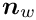 is the tangent vector to the wall. In the present example, 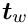 and 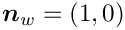, which gives 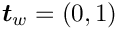.
Unfortunately, the no-slip boundary condition at the wall means that the momentum equation is not assembled at the interface boundaries. If we wanted to use this method of (weak) enforcement of the contact angle condition, the velocity degrees of freedom at the node on the right-hand end of the free surface must be unpinned, but the no-slip condition will then not be imposed. In fact, this problem is deeper than it might appear and is a manifestation of the failure of the continuum hypothesis to treat dynamic (moving) contact lines. The correct (mathematical) treatment of that problem is still unresolved, but in this static problem, there is an alternative treatment.
Here, we can make use of the fact that the kinematic condition is also trivially satisfied because the velocity field is zero. Thus, we replace the kinematic condition associated with the right-most node on the interface by the (strong) condition that
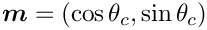
where 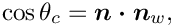 is the outer unit normal to the free surface and is the unit normal to the bounding wall directed out of the fluid, as before.
The imposition of the contact angle condition is implemented within FluidInterfaceBoundingElements that are FaceElements of the FluidInterfaceElements; in other words, they are elements that are two spatial dimensions lower than the bulk elements. In two-dimensional problems, the FluidInterfaceBoundingElement's are PointElements.
Problem Parameters
We use a namespace to define the parameters for the pseudo-solid mesh constitutive law used in the problem and a function that defines the outer unit normal to the container boundary which is 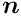. The other problem parameters: the contact angle, prescribed volume and capillary number, are specified as member data of the problem class, see below, so that they will be re-initialised when different instances of the class are constructed.
The driver code
We shall solve the problem twice, once using the external pressure as the degree of freedom associated with the volume constraint and once using an internal fluid pressure degree of freedom instead. The choice of which degree of freedom to use is determined by the boolean flag passed to the problem constructor. The driver consists of a simple loop to cover both possibilities, construction of the problem and then a call to run the parameter study with different output directories in each case.
The elements are Hijacked PseudoSolidNodeUpdate QCrouzeixRaviart type elements, where the Hijacked actually required only in the case when an internal pressure degree of freedom is to be used to enforce the volume constraint, see below.
The problem class
The problem class consists of a constructor that takes the aforementioned boolean flag to determine which pressure degree of freedom to use for the volume constraint; a destructor to clean up all memory allocated during the problem construction; a function that performs a parameter study, decreasing the contact angle from 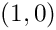 in steps of 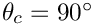; and a function that documents the solution.
There are also three helper functions that are used to create the FaceElements used to enforce the additional boundary conditions and constraints. The function create_free_surface_elements() adds ElasticLineFluidInterfaceElements to the upper boundary (boundary 2) of the mesh, exactly as in another tutorial . The function create_volume_constraint_elements() constructs the elements required to enforce the volume constraint. Finally, the function create_contact_angle_element() constructs the PointElement that enforces the contact angle condition at the solid wall of the container.
Finally, the class has member data corresponding to the physical variables of the problem and provides permanent storage for pointers to the data that stores the external pressure and the data for the pressure degree of freedom that will be "traded" for the volume constraint. In additional, an output stream and pointers to the different meshes that will be assembled in the problem are also included.
The problem constructor
The constructor first initialises the member data and sets the outer unit normal to the wall to be . The initial contact angle is set to be , so that the interface will be horizontal.
Next, a element rectangular mesh is constructed on the undeformed domain.
A Data object containing a single value is constructed to store the external pressure and the initial value is set.
We next setup the reference pressure and traded pressure. If we are using the external pressure as the reference pressure, then we pin it and set an internal pressure degree of freedom as the "traded" pressure. In order to use an internal pressure degree of freedom as the "traded" pressure, we must ensure that the original associated (continuity) equation is not assembled, but that the degree of freedom is still treated a fluid pressure variable when assembling the other residuals within the element. In addition, we will also need direct access to the data and its global equation number. The appropriate machinery is provided by the Hijacked wrapper class which allows variables within an underlying element to be "hijacked". The bulk elements are of QCrouzeixRaviart type, which means that the pressure variables are internal data and we hijack the first of these in the first element (although any would do). The function hijack_internal_value(..) instructs the bulk element to null out any contributions to the residuals and Jacobian matrix associated with that global equation number and returns a "custom" Data object that consists of a single value corresponding to the "hijacked" value and its global equation number. The "custom" Data object can then be used as external data in other elements that assemble the new residuals. It is important that any hijacked degrees of freedom must have residual contributions provided by another element otherwise the system Jacobian matrix will be singular. For more details about "hijacking" see this document.
If we are using an internal pressure as the reference pressure then the external pressure is a degree of freedom and must be added as global data of the problem. The "traded" pressure is the external pressure and an internal fluid pressure is fixed to have the value zero.
We then build the constitutive law that determines the fluid mesh motion and assign it to the bulk elements.
We next set the fluid boundary conditions by pinning both velocity components on the base and side of the container (boundaries 0 and 1) and the horizontal velocity only on the symmetry line (boundary 3). The upper free surface (boundary 2) remains free.
The boundary conditions for the pseudo-solid mesh have a certain amount of ambiguity. We choose the least restrictive boundary conditions and enforce that the nodes cannot move away from the container boundaries, but can slide tangentially. Thus the vertical displacement is pinned on boundary 0 and the horizontal displacement is pinned on boundaries 1 and 3.
In order to reduce the number of degrees of freedom we further constrain the nodes to move only in the vertical direction by pinning all horizontal displacements.
Finally, we call the helper functions to construct the additional elements, add all sub meshes to the problem, build the global mesh and assign equation numbers.
Creating the additional elements
Free surface elements
The free surface elements are created in exactly the same way as in another tutorial . The only difference is that the construction takes place within the function create_free_surface_elements() rather than within the constructor directly.
Volume constraint elements
The volume constraint condition is enforced by two different types of element. A single GeneralisedElement that stores the prescribed volume and the Data that is traded for the volume constraint. We first create this VolumeConstraintElement and add it to the Mesh addressed by the Volume_constraint_mesh_pt.
We next build and attach ElasticLineVolumeConstraintBoundingElements to all the boundaries of the domain. These elements compute the contribution to the boundary integral with integrand 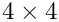, described above. The sign convention is chosen so that these element will return a positive volume. The "master" VolumeConstraintElement must be passed to each FaceElement so that the Data traded for the volume constraint is consistent between all elements.
Contact angle elements
The single contact angle (point) element is constructed from the free surface element via the function make_bounding_element(..) which takes an integer specifying which face to use. In this problem, the right-hand-side (face 1) of the final free surface element is the contact point. The contact angle, capillary number and wall normal must be passed to the element which is then added to the appropriate Mesh. In general the wall normal can very with position, so it is passed as a function pointer.
The parameter study
The parameter_study(..) function creates a DocInfo object and opens a filestream for the trace file using the directory name specified by the input string argument.
We then solve the problem six times, decreasing the contact angle between each solution and documenting the solution after each solve.
Post-processing
The doc_solution function writes the bulk fluid mesh into an output file and then writes data into the trace file. The final two entries in the trace file are the computed pressure drop across the interface and the corresponding analytic prediction. Thus, comparison of these two entries determines the accuracy of the computation.
Comments and Exercises
Comments
- The driver code also contains an alternative formulation in which
SpineElementsare used to determine the deformation of the fluid mesh. The formulation is somewhat more cumbersome because the permitted deformation must be specified for each different problem and is specifically tied to a given domain geometry. The overall approach is exactly the same and large sections of the code are identical. The advantage of usingSpineElementsis that fewer degrees of freedom are required to update the position of the fluid mesh. - The weak imposition of the contact angle condition is enabled by passing an optional boolean flag when setting the contact angle If a contact angle is not set then theel_pt->set_contact_angle(&Angle,false);
FluidInterfaceBoundingElementwill construct and add the appropriate boundary term to the momentum equation which may be required if another equation is used to prescribe the contact angle indirectly. - An equivalent problem using an axisymmetric formulation of the governing equations is also included within the library. The only physical difference is that the pressure drop in the axisymmetric problem is twice that of the two-dimensional problem because the mean curvature of the sphere is twice that of a circle of equivalent radius.
Exercises
- Confirm that the computed pressure differences agree with the analytic expression. Verify that the interface shape is unaffected by the capillary number, but that the pressure difference across the interface changes in inverse proportion to it. Check that the pressure difference is unaffected by the choice of reference pressure.
- Relax the constraint that the nodes can only move vertically. What happens to the mesh? Explain your result.
- Investigate what happens when the volume constraint is not imposed.
- Try to impose the contact angle condition weakly by unpinning the fluid velocities at the contact point. Is there any difference between the cases when internal and external pressure degrees of freedom are traded for the volume constraint?
- Modify the problem so that the bounding wall lies at a fixed nonzero angle to the vertical. Determine the interface curvature in this case and confirm that the computation agrees with your modified analytic prediction.
Source files for this tutorial
- The source files for this tutorial are located in the directory:
demo_drivers/navier_stokes/static_cap/
- The driver code is:
demo_drivers/navier_stokes/static_cap/static_single_layer.cc
PDF file
A pdf version of this document is available.